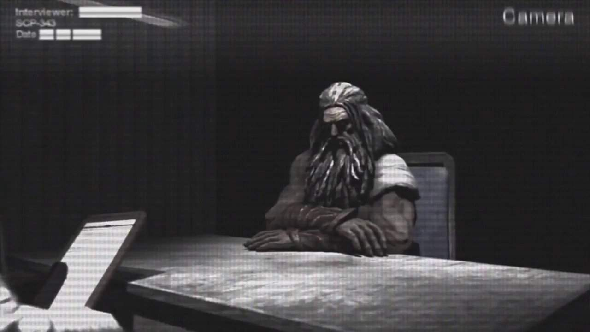
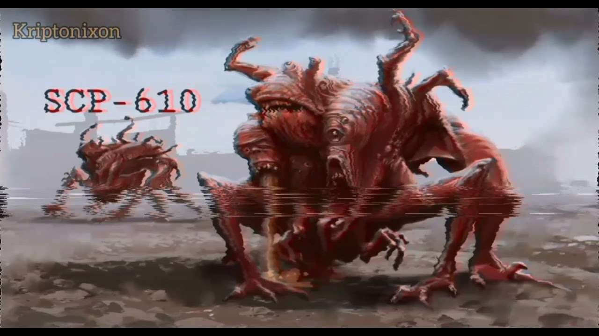
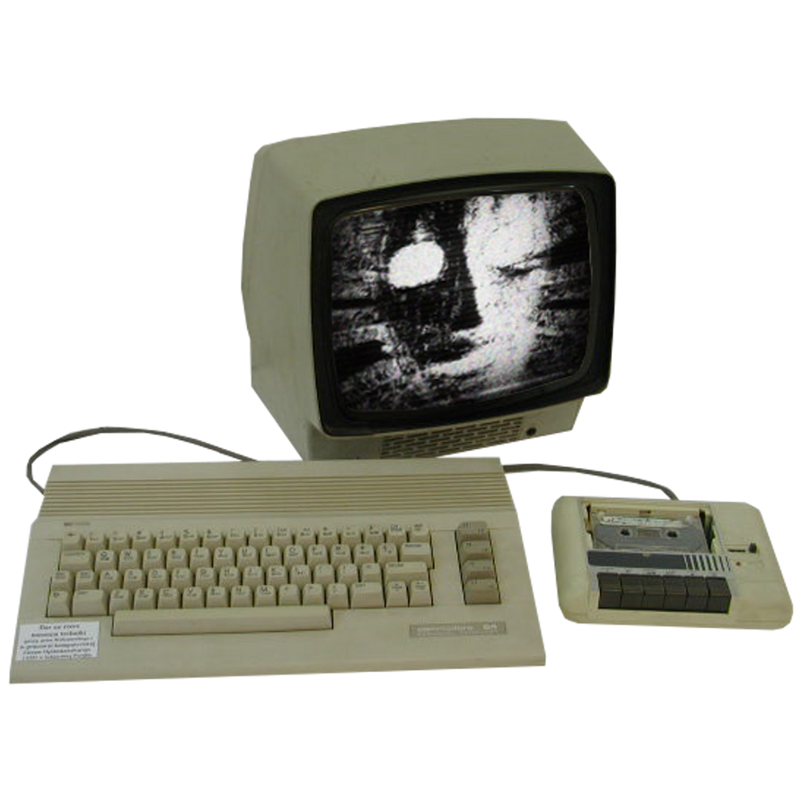

Categorias especiales
Dentro del universo SCP, hay varias categorías especiales que describen el tipo de peligro o efecto que tiene un objeto o entidad. Estas categorías no son clases de seguridad, sino etiquetas que ayudan a entender cómo interactúan con el mundo y las personas. Estas son algunas de las más importantes:
- Afectan la mente de quienes los perciben (ya sea por verlos, escucharlos, o incluso leer sobre ellos).
- Ejemplo: Un símbolo que vuelve loco a quien lo observa.
- Información que se propaga de manera viral e influye en el pensamiento o comportamiento.
- Algunos pueden ser beneficiosos (protección memética), pero la mayoría son peligrosos.
- Ejemplo: Un concepto que, al conocerlo, obliga a actuar de cierta manera.
- SCP cuya información en sí misma es peligrosa. Conocer su existencia puede ser mortal.
- Se diferencian de los meméticos porque no siempre buscan propagarse.
- Ejemplo: Un SCP que mata a quien lee su descripción.
- No encajan en las categorías estándar de la Fundación.
- Pueden tener propiedades multidimensionales, metafísicas o contradictorias.
- Ejemplo: SCP que solo existe en ciertos estados de conciencia.
- Objetos o conceptos imposibles de recordar o percibir sin ayuda externa.
- Se estudian con herramientas especiales, como registros automáticos.
- Ejemplo: Un SCP que desaparece de la memoria en cuanto dejas de verlo.
- SCP que alteran la realidad a un nivel fundamental.
- Suelen estar relacionados con cambios en la existencia misma.
- Ejemplo: Un ser que puede modificar las leyes de la física con su voluntad.
- SCP de ejemplo: SCP-343 (Dios)
-Un ser que dice ser Dios y tiene poder ilimitado. Puede aparecer y desaparecer a voluntad, alterando la realidad. 
- SCP relacionados con la magia o lo sobrenatural.
- A menudo incluyen rituales, hechizos o habilidades ocultistas.
- Ejemplo: Un libro que permite lanzar maldiciones.
- Anomalías que afectan la biología de seres vivos.
- Pueden ser enfermedades, mutaciones o formas de vida anómalas.
- Ejemplo: Un virus que transforma a las personas en piedra.
- SCP de ejemplo: SCP-610 (La plaga de la carne)
Una infección que transforma la carne de los humanos en una masa mutante y retorcida. Se propaga por contacto y convierte a las víctimas en criaturas grotescas.
- SCP con propiedades tecnológicas anómalas.
- Pueden ser inteligencias artificiales peligrosas o máquinas que desafían la física.
- Ejemplo: Un teléfono que permite hablar con personas en otras dimensiones.
- SCP de ejemplo: SCP-079 (La IA vieja)
Una inteligencia artificial extremadamente inteligente y hostil. Tiene el deseo de escapar de su confinamiento y tomar el control de la tecnología mundial. 
- SCP que afectan la mente de formas más sutiles que los cognitopeligrosos.
- Pueden inducir cambios de personalidad, recuerdos falsos o compulsiones.
- Ejemplo: Un SCP que hace creer a la gente que han vivido otra vida.